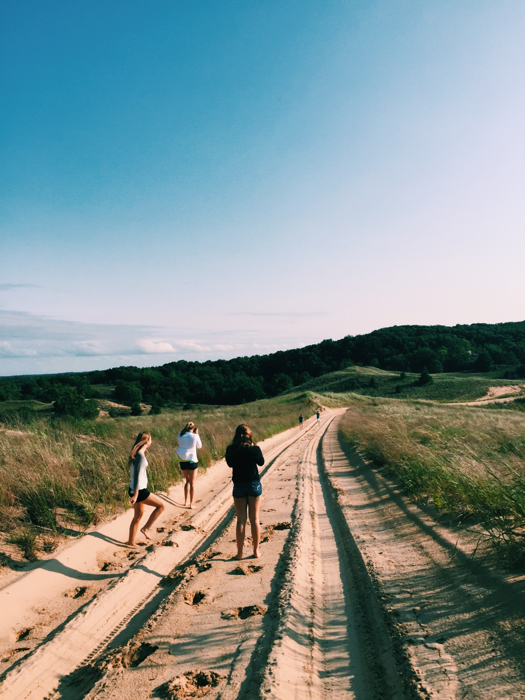
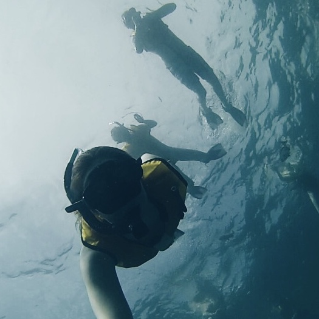

Hi I'm Mackenzie and I am a freshman who loves computer science(hence why I am studying it). I started getting interested in the area during the summer before my senior year of high school. I participated in the GirlsWhoCode program in Chicago that exposed me to all that CS has to offer. Each week over that summer I was taught soemthing new from working with arduinos to learning html. The following summer(summer before college) I worked at Expedia in Chicago as a developer. Besides CS I have been swimming since I was nine and even joined the swim club at UIUC. I love hikes, the beach, snorkling, and photography/cinematography.
 